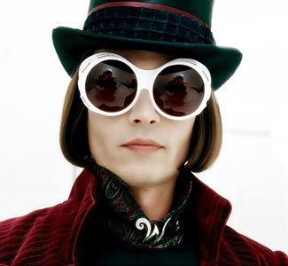
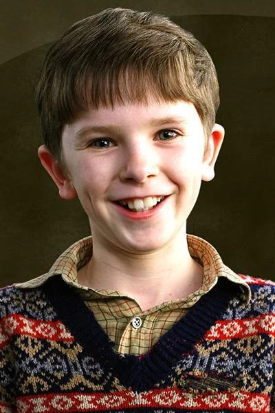

Willy Wonka: Characters
Willy wonka
Portrayed by: Johnny Depp
Appearance: Johnny Depp’s Willy Wonka is instantly recognizable for his outlandish look: a purple velvet coat, a bowler hat, and the prominent white gloves. His pale skin and offbeat fashion choices make him a visually memorable character in Burton’s dark, fantastical world. Personality: Wonka is eccentric, socially awkward, and somewhat distant from the children he encounters. He is both a childlike dreamer and a reclusive genius, and his emotional depth is revealed as the story progresses—particularly his fraught relationship with his father, played by Christopher Lee. Voice and Mannerisms: Depp brings an odd, almost robotic cadence to Willy Wonka’s voice, lending him a surreal and disjointed energy. His facial expressions and body language add layers of oddity to the character, making him both enigmatic and strangely relatable.
Charlie
Portrayed by: Freddie Highmore
The Story of Charlie Bucket Charlie Bucket is a young boy who lives in a small house with his parents and four grandparents in a poor part of town. Despite his humble background, he is known for his kindness, honesty, and love for his family. His life changes when he wins one of the five golden tickets to tour Willy Wonka’s famous chocolate factory. The adventure that follows proves that true wealth lies not in money, but in goodness and family. The Goodness Within: Charlie is often seen as a symbol of purity and goodness. Unlike the other children in the story, Charlie never succumbs to greed, selfishness, or bad behavior. His actions are motivated by selflessness, love for his family, and an innate sense of right and wrong. A Dreamer with Integrity: Despite his circumstances, Charlie dreams of better days. He’s not driven by wealth or material things, but by a genuine curiosity and wonder about the world. When he wins the golden ticket, it’s not for the sake of riches, but for the chance to experience something magical—a dream come true for a boy with a heart full of hope.